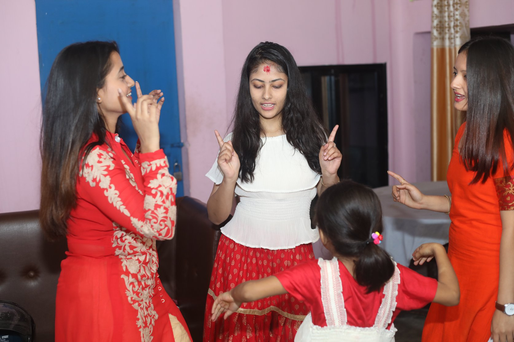
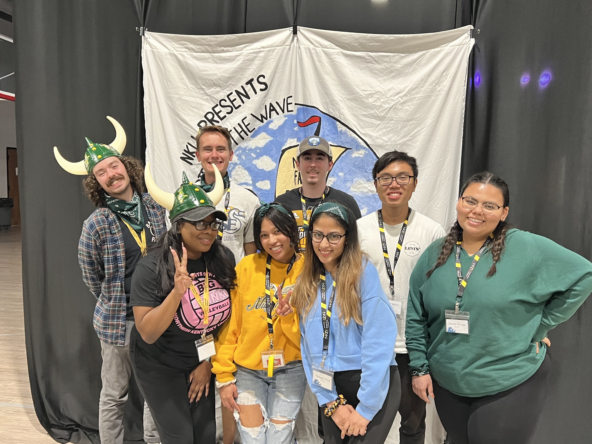

Hi! everyone, I am Manogya Aryal. I am a Sophomore studying Computer Science at Northern Kentucky University.

My Photo
My Achievements
Few things in my life that I consider as achievements are coming to the states for my undergraduate degree. I have always dremaed of studyin abroad and it was a very difficult process but I made it. I am having a wonderful time here and I am studying CS,I am actually finding my areas of interest within Computer Sciecne degree that I waant to have a carrier in. I have made a lot of friends, new connections from faculty and staff, and from my on campus job. I have also learnt to be more confident in myself during my time here, I have been communicating well which was one of the hardest thing for me back home in Nepal.
My top three skills
- Dancing: I enjoy Dancing. It helps me calm down, and whenever I feel like I need a little break from everything, I dance.
- Coding: This is something new to me. Something I started learning since I started my undergrad here. I am slowly developing my Skills on it. As semesters pass by, I learn more and more about it. And, the interesting thing is that there is no end point. You can keep learning in this field, and every day there is soemthing new and more interesting in the Computer Science world.
- Communicating: My biggest achievement/skill I developed since I got here is learning to communicate. It could be with my professors or my friends or at work. I had a hard time public speaking or communicating in general but I have grown so much in that area.


